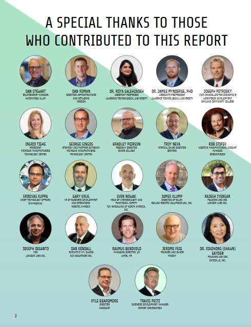

Brain-Drone Race
Lawrence Technological University, in collaboration with The University of Alabama
Coordinated and delivered LTU’s first Brain-Drone Race, a public event in which participants fly drones
using brain-computer interfaces, bringing together neuroscience, robotics, and AI. The initiative was later
presented to the department’s Industrial Advisory Board as a model for interdisciplinary,
industry-relevant education.

Robotics Roundtable, Automation Alley
Regional robotics and automation roundtable
Represented LTU at a regional roundtable with industry, academic, and economic development leaders,
contributing to discussions on applied robotics, workforce readiness, and innovation ecosystems.
Education and Workforce Training Structure, Alabama IMaDE Center
The University of Alabama
Helped build the instructional and workforce-development infrastructure for the B.S. in Manufacturing Systems
Engineering, aligning the curriculum with automation, robotics, PLCs, digital twins, and smart manufacturing.
- Developed 15 modular courses, lab manuals, and digital-twin-enabled instructional materials.
- Implemented lab workflows connecting automation hardware with virtual manufacturing environments.
- Supported partnerships with Mercedes-Benz U.S. International, Rockwell Automation, EBZ SysTec, Intelitek, Learning Labs, and TransfrVR.
Smart Manufacturing Systems Teacher Training Workshop
Alabama IMaDE Center, two-day workshop
Organized and delivered a two-day workshop introducing educators to robotics, PLCs, smart sensors, VR, and
automated systems through lectures, lab tours, and hands-on sessions, with Intelitek, Mercedes-Benz U.S.
International, Alabama Robotics Technology Park, TransfrVR, and the Alabama Community College System.